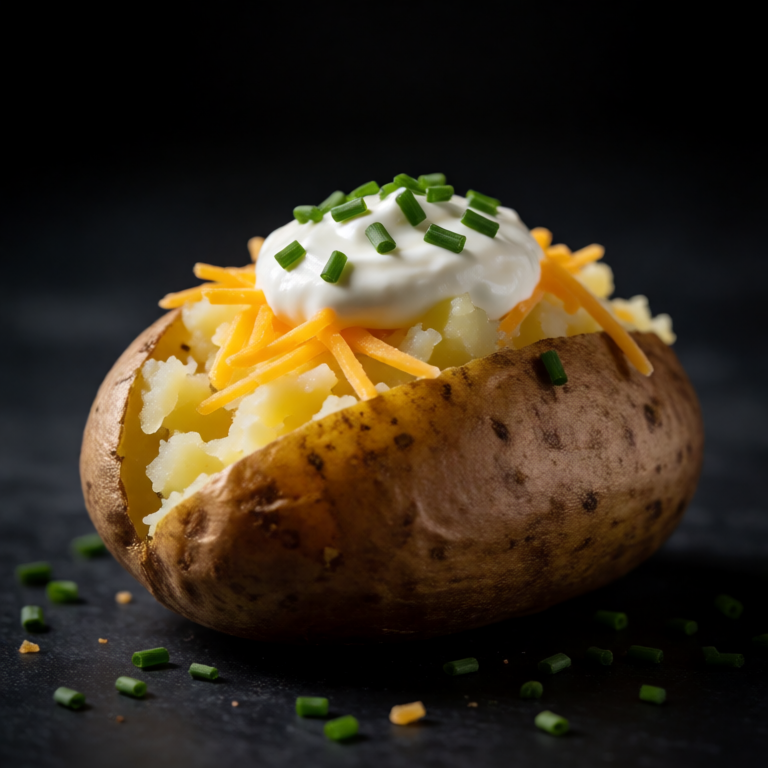

A dessert-like dinner. A sweet potato baked until soft, then topped with marshmallows and pecans.
A short ingredient list lets Baked Sweet Potato with Marshmallows and Pecans depend on texture. Season sweet potato in stages, cook until the center is ready, and finish with something fresh or sharp.
At a Glance
Prep
5m
Cook
50m
Serves
1
Difficulty
Easy
Rate this slopBe the first to rate it.
Ingredients
Method
- 01
Bake
Preheat oven to 425F/220C. Rub the sweet potato with oil and salt. Pierce with a fork. Bake for 45-50 minutes until soft.
- 02
Top
Split the potato open. Add butter, cinnamon, marshmallows, and pecans. Return to the oven for 2-3 minutes until the marshmallows are toasted.
Easy swaps
A small acorn squash half can replace the sweet potato, though it may need a longer roast. Walnuts work instead of pecans, and maple syrup can replace brown sugar for the finish.
Storage
Cool the cooked portion promptly and keep it covered for three days. Warm it at moderate heat, then add mini marshmallows after reheating so it keeps its texture.
Slop Notes
This is essentially a Thanksgiving side dish masquerading as a solo dinner.
Recipe by foidslop · How we create our recipes
The Weekly Slop
Seven dinners for one, one short note, every Sunday. No life story.
One email every Sunday. Unsubscribe whenever. Double opt-in. See the privacy policy.
Keep eating
Related recipes